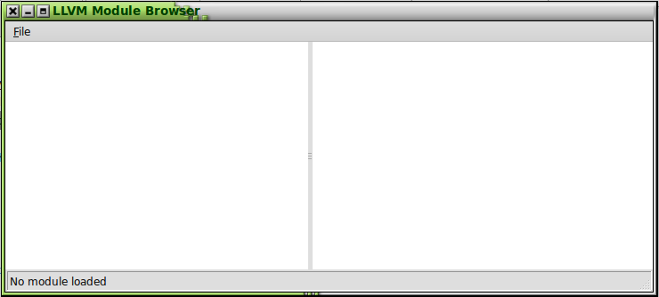
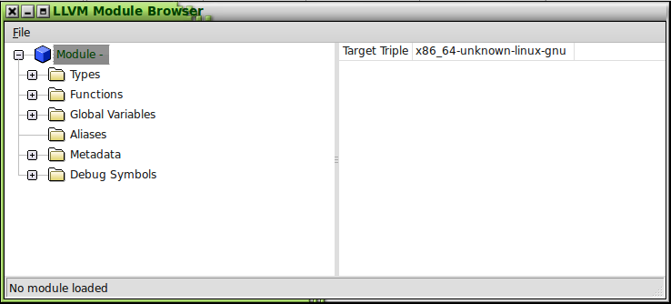

LLBrowse requires the following packages to be installed:
LLBrowse uses CMake to generate the Makefiles for the project.
Create a directory for containing the build. It is not supported to build LLBrowse on the source directory. cd to this directory:
mkdir mybuilddir
cd mybuilddir
Execute this command on the shell replacing path/to/llbrowse/source/root with the path to the root of your LLBrowse source tree:
cmake path/to/llbrowse/source/root
If your installation of 'llvm-config' is not in one of the standard places, you may need to add it to your path in order for CMake to find it.
If CMake was successful, you can now build the executable by running 'make':
make
You can run the llbrowse program from the shell:
cd mybuilddir
./llbrowse
The program should open a new, blank window:

To open an LLVM module, select the File -> Open menu. A file dialog should appear. Select the module file (either a .bc or .ll file) and click "Open" in the dialog box.
You should now see an outline of the module contents:

At this point, you can explore the contents of the module by expanding the nodes of the tree view. The pane on the right side shows additional details about the currently selected item.